CS 180 · Computational Photography
Image Warping & Mosaicing
From overlapping photographs to a shared perspective: manual correspondences, least-squares homographies, inverse warping, and feather blending.
Three mosaic scenes · Manual and automatic stitching · Four-point RANSAC · Multiscale features
- A.1 · Source photographs
- A.2 · Recovering homographies
- A.3 · Inverse warping & interpolation
- A.3 · Speed vs. quality
- A.3 · Two rectification examples
- A.4 · Bank mosaic & blending
- A.4 · Nighttime street mosaic
- A.4 · River panorama
- A.5 · Interior design preview
- B.1 · Harris corners & ANMS
- B.2 · Feature descriptors
- B.3 · Feature matching
- B.4 · RANSAC & automatic mosaics
- B.5 · Multiscale processing
- Code & saved matches
I photographed the bank scene in four overlapping views. The capture order is Bank 01 → Bank 03 → Bank 04 → Bank 02. I register adjacent views, keeping Bank 03 as the reference coordinate system.


Shared details such as window frames, building corners, and signs provide correspondences. Moving cars and nearby objects can disagree between views, so they are poor alignment features.
A homography maps a source location (x, y) to a matching destination location (u, v). I represent each point as [x, y, 1]ᵀ, multiply by H, and divide by the third output coordinate. Fixing h₃₃ = 1 leaves eight unknowns.
[su] [h11 h12 h13] [x] [sv] = [h21 h22 h23] [y] [ s] [h31 h32 1 ] [1]
Eliminating s gives two linear equations per point. The clicked coordinates are known; the entries of H are the unknowns.
x h11 + y h12 + h13 − ux h31 − uy h32 = u x h21 + y h22 + h23 − vx h31 − vy h32 = v [x y 1 0 0 0 −ux −uy] h = u [0 0 0 x y 1 −vx −vy] h = v
I stack these rows into A and solve A h ≈ b with np.linalg.lstsq. Each pair uses more than four matches. The reported error below is Euclidean reprojection distance in the destination image, measured on the same points used to fit H; it is not an independent accuracy test.
Bank 01 → Bank 03

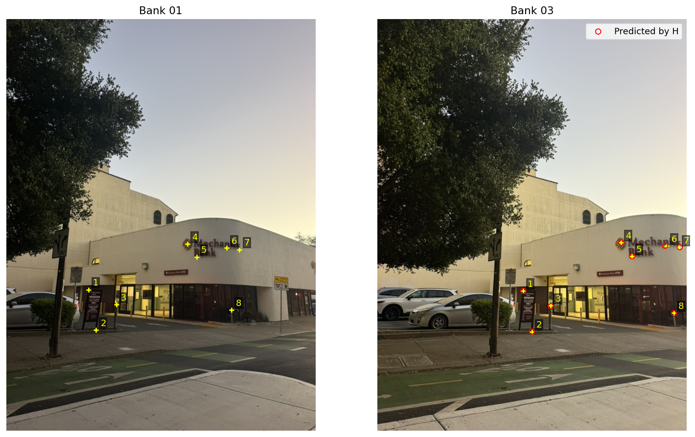
Mean reprojection error: 1.43 px · Maximum: 4.19 px.
H = [[ 0.800494 0.019025 159.297291] [ -0.155901 0.894099 56.680139] [ -0.000231 -0.000039 1. ]]
Bank 03 → Bank 04

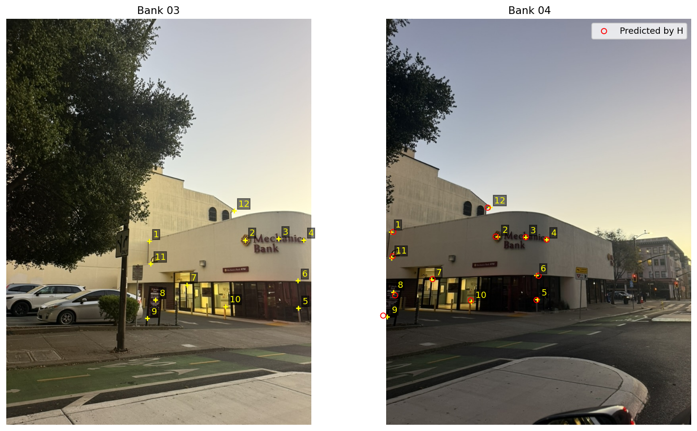
Mean reprojection error: 4.87 px · Maximum: 10.70 px.
H = [[ 1.553302 -0.125544 -466.272023] [ 0.484845 1.376535 -265.216244] [ 0.000737 0.000004 1. ]]
Bank 04 → Bank 02

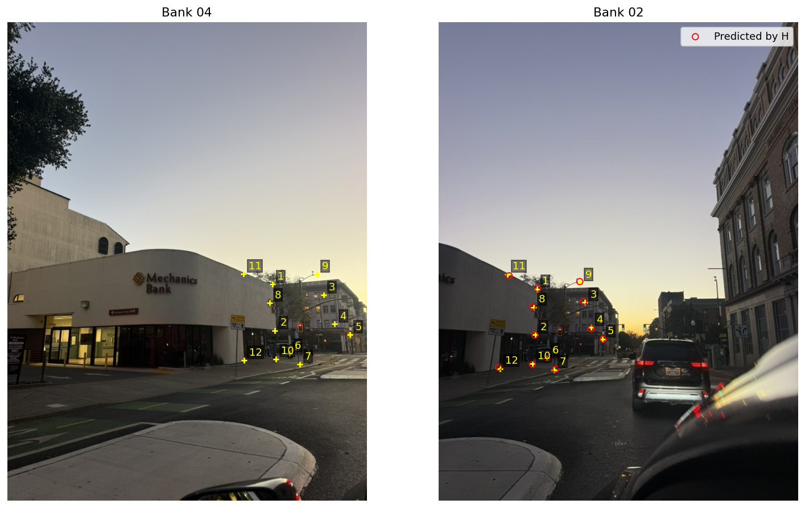
Mean reprojection error: 2.47 px · Maximum: 5.14 px.
H = [[ 1.446978 -0.198462 -434.556111] [ 0.532185 1.131221 -196.470318] [ 0.000792 -0.000268 1. ]]
Why point placement mattered
My first Bank 03/04 matches were clustered near the lettering. Although their mean error was only 2.48 pixels, the three-photo mosaic showed doubled roof and tree edges. Reselecting 12 features across a wider area improved the visible alignment. Small fitting error in one region does not guarantee an accurate warp throughout the image.
I transform the four source corners through H, round the bounds outward, and allocate a canvas large enough to contain the result. Its origin can differ from (0, 0), so canvas indices must be offset when placing images into a common frame.
For every destination pixel (u, v), inverse warping applies H⁻¹ to recover its fractional source location (x, y). Sampling backward avoids the holes produced by sending each source pixel forward. A separate validity mask distinguishes empty canvas from actual black image pixels.
[X, Y, W]ᵀ = H⁻¹ [u, v, 1]ᵀ (x, y) = (X/W, Y/W)
Nearest neighbor vs. bilinear
Nearest neighbor rounds (x, y) and copies one pixel. Bilinear interpolation samples the four surrounding neighbors. With dx = x − floor(x) and dy = y − floor(y), the weights are:
top-left: (1 − dx)(1 − dy) top-right: dx(1 − dy) bottom-left: (1 − dx)dy bottom-right: dx dy

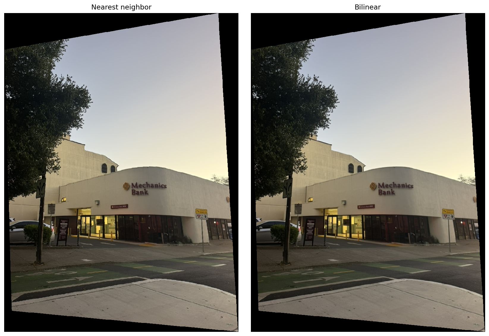

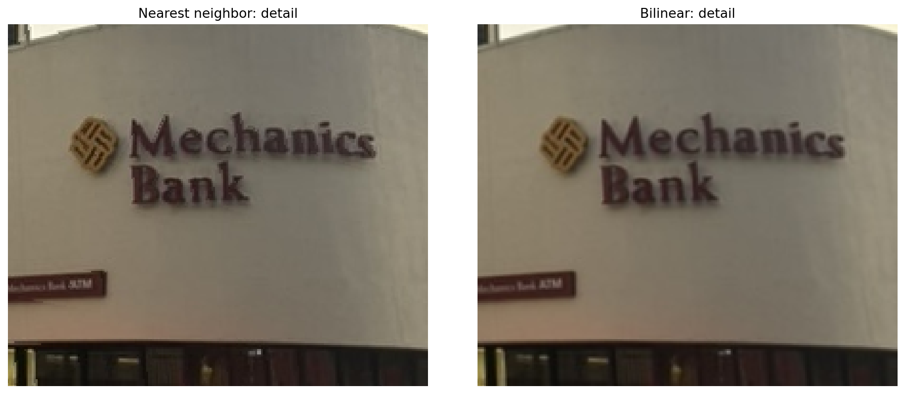
Speed vs. Quality
| Method | Computation per output pixel | Visual trade-off |
|---|---|---|
| Nearest neighbor | Round the source coordinates and copy one pixel. | Preserves individual source colors, but fractional-pixel motion can create jagged edges and abrupt changes. |
| Bilinear | Read four neighboring pixels and compute their weighted average. | Smoother edges and transitions, with some softening of fine texture. |
Nearest neighbor performs less sampling and arithmetic, so it is generally the faster interpolation method. Bilinear spends more computation on smoother reconstruction. Both implementations also compute the same inverse mapping, so the total runtime difference depends on image size and implementation; four samples do not imply a fourfold runtime increase. This comparison describes computational work rather than measured timings.
In the bank comparison above, both methods produce the same geometry. The differences are subtle at full-image scale and easier to inspect in the enlarged lettering and diagonal edges. I use bilinear sampling for the mosaics to reduce jagged transitions, accepting its additional computation and slight smoothing.
Two rectification examples follow below.
Rectification uses one photograph and known object geometry. I click four corners on the photographed object and define their destinations as the corners of an ideal rectangle. The same computeH function estimates the mapping, and both inverse-warping implementations sample the rectangular output directly.
The correspondence order is the object’s top-left, top-right, bottom-right, bottom-left. Target coordinates are [0, 0], [W − 1, 0], [W − 1, H − 1], [0, H − 1]. For the notebook, the corner order follows its reading orientation, even though it lies sideways in the original photo.
Example 1 · Notebook cover (own photograph)
The notebook measures 6 × 8.25 inches, giving a width-to-height ratio of 8:11. I map its cover to a 600 × 825 pixel portrait rectangle. The selected corners follow the notebook’s reading orientation, so the upright result has the elastic strap running vertically. Rounded corners require estimating where the straight cover edges would intersect.

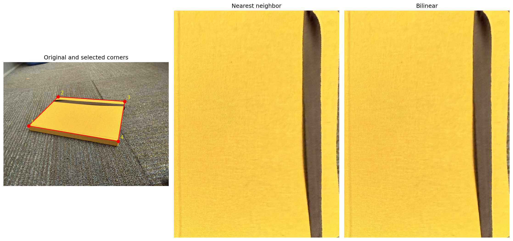
Full nearest-neighbor result · Full bilinear result


Recovered homography · notebook
[[ 0.321896 -1.877727 2723.769282] [ 1.487459 1.509253 -3260.392594] [ 0.000213 0.001572 1. ]]
The perspective-shortened cover becomes an upright rectangle with the measured proportions. Bilinear interpolation averages neighboring source pixels, while nearest neighbor preserves individual samples; the cover’s subtle texture makes the difference less obvious at this display size.
Example 2 · Sudoku grid (external photograph)
The outer Sudoku grid is known to be square, so I map its four corners to a 600 × 600 pixel output. The input is OpenCV’s sudoku.png sample, converted to JPEG for this project.


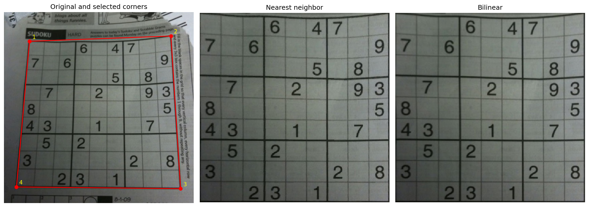
Full nearest-neighbor result · Full bilinear result


Recovered homography · sudoku
[[ 1.577954 0.141159 -129.973398] [ 0.063181 1.691012 -149.924759] [ 0.000131 0.000393 1. ]]
The four outer corners now form a square, but some interior grid lines remain curved. The photographed paper is not perfectly flat, and a single planar homography cannot undo that curvature. Bilinear sampling smooths the enlarged grid lines and digits; it does not correct the paper’s bending.
Rectification workflow code · Corners, target dimensions, and matrices · Source credits
The shared region must overlap for a panorama to align: two photographs showing A–B–C and B–C–D should become A–B–C–D. I warp every original image directly into Bank 03’s reference frame, then combine all layers once.
H01→03 = estimated directly H04→03 = inverse(H03→04) H02→03 = H04→03 · inverse(H04→02)
The rightmost matrix acts first. This sends Bank 02 through Bank 04 into Bank 03’s coordinates without resampling an already blended mosaic.
Feather blending
Each source pixel receives a weight based on its distance to the nearest image edge. I warp the weight map alongside its image and set invalid weights to zero. At each canvas pixel, I divide the sum of weighted colors by the sum of weights.
I = (Σᵢ wᵢ Iᵢ) / (Σᵢ wᵢ)

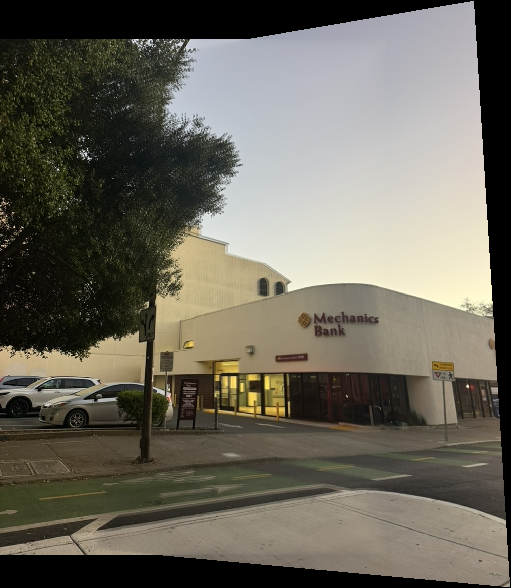

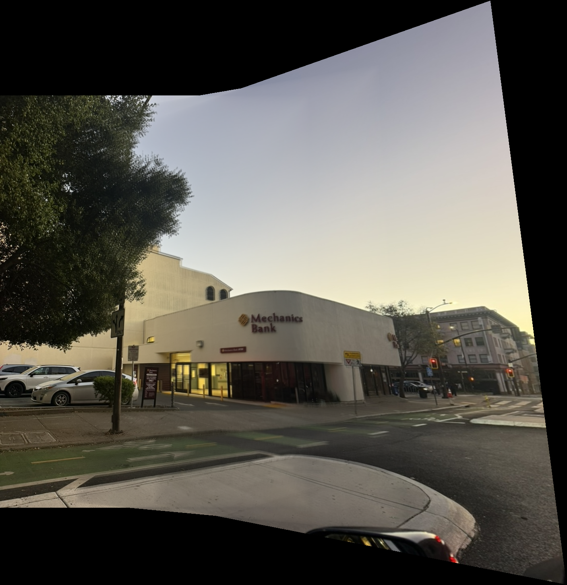
The three-photo version extends the view toward the intersection while keeping the bank recognizable. Some ghosting remains around the entrance, tree, and foreground pavement. Feathering softens seams but cannot correct geometric disagreement.
Adding the fourth view

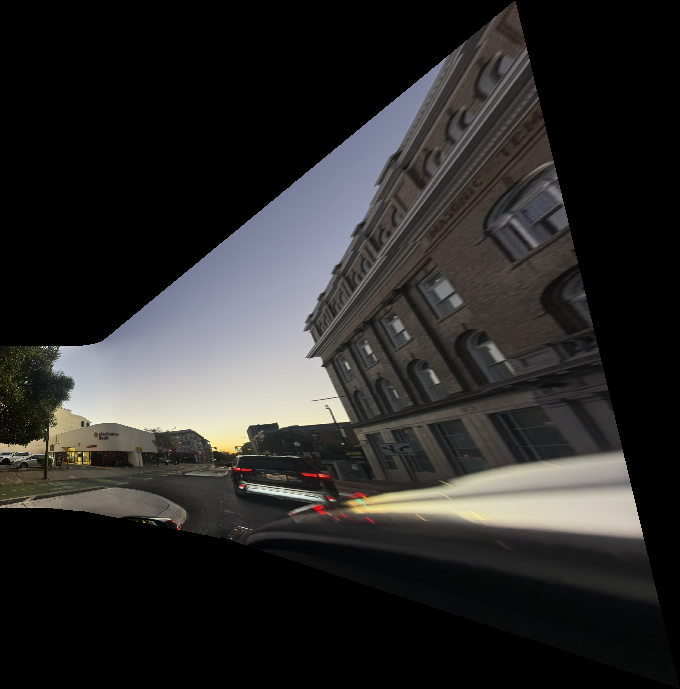
The fourth view adds scene coverage but heavily enlarges the right-hand building. A wide planar projection can stretch views far from the reference direction; homography estimation and composition may also contribute. I retain the three-photo version as the main result and show this experiment as a limitation. The black borders mark uncovered canvas.
The second scene looks downhill along a nighttime street. The capture order is Street 04 → Street 02 → Street 01 → Street 03. I reuse the same homography, inverse-warping, and feather-blending functions, using Street 02 as the reference.
Source photographs


Manual correspondences and recovered homographies
I selected 12 matching features per adjacent pair. Yellow markers show clicks, and red circles show homography predictions. Errors are measured in the original destination image’s pixels, so these values should not be directly compared with the smaller bank photos without accounting for resolution.

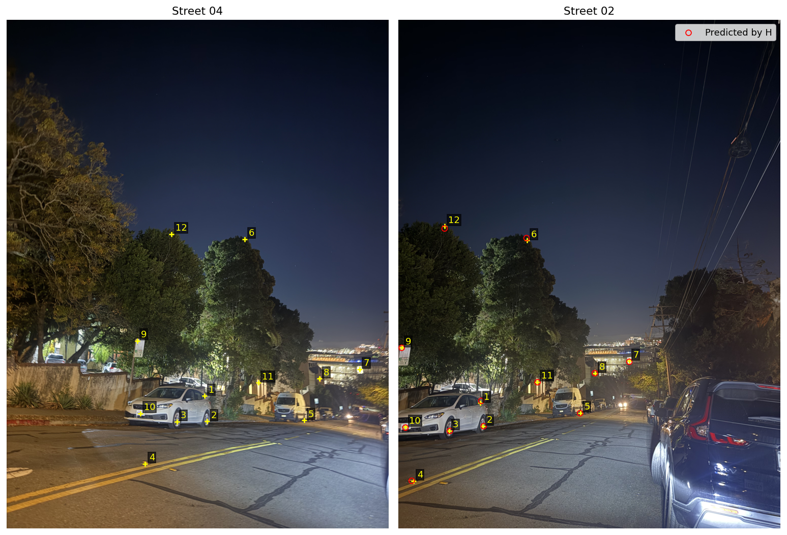
Mean reprojection error: 8.89 px · Maximum: 19.79 px.
H04→02 = [[ 1.611271 0.003671 -1644.374398] [ 0.372561 1.482878 -890.836777] [ 0.000175 0.00003 1. ]]

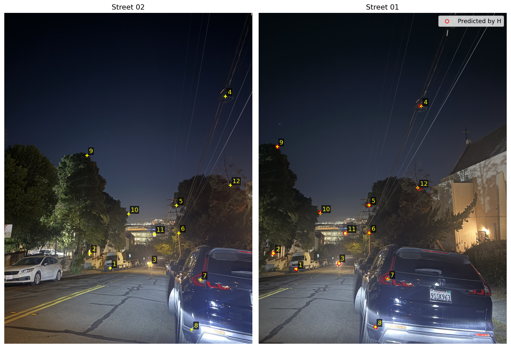
Mean reprojection error: 10.00 px · Maximum: 20.37 px.
H02→01 = [[ 1.31182 -0.086146 -915.968632] [ 0.303259 1.185685 -567.127188] [ 0.000107 -0.000005 1. ]]

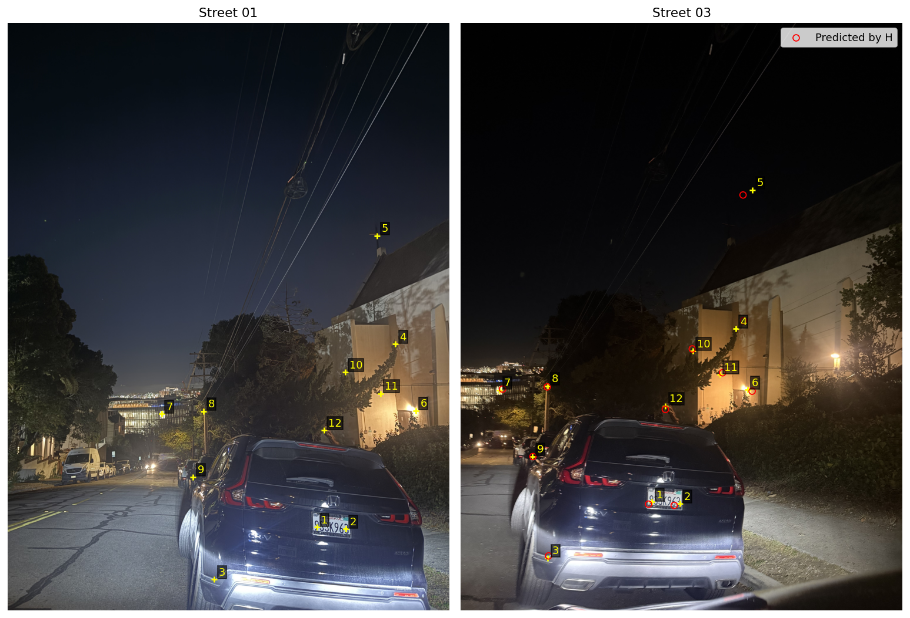
Mean reprojection error: 42.28 px · Maximum: 108.35 px.
H01→03 = [[ 2.113904 -0.024747 -1611.296108] [ 0.327717 2.50833 -2229.47782 ] [ 0.000079 0.000104 1. ]]
One reference frame
H04→02 = estimated directly H01→02 = inverse(H02→01) H03→02 = H01→02 · inverse(H01→03)
Each original image is warped directly into Street 02’s coordinates, and all color layers are combined in one weighted average. For these web exports, source images are reduced to a maximum dimension of 1600 pixels, with coordinate scaling incorporated into the transforms; the fitting errors above use the full-resolution saved coordinates.

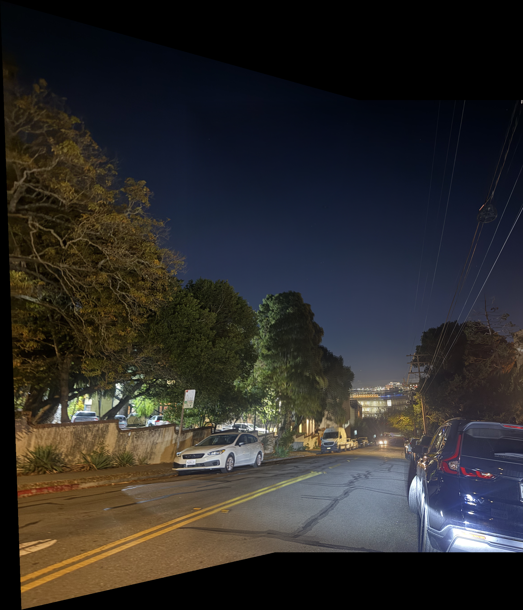

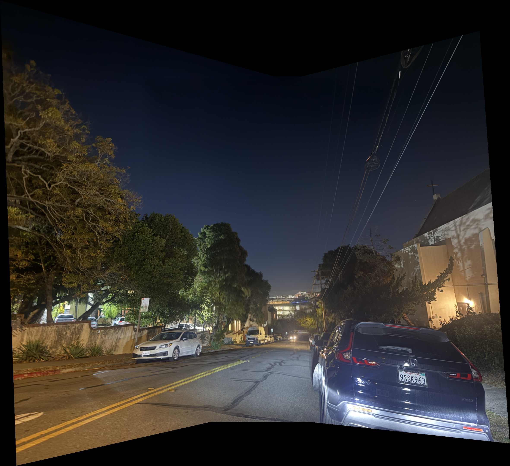
The three-photo result extends from the trees and wall on the left to the lit building on the right. The street reads as a continuous scene, though some softness and ghosting remain around foliage and the nearby SUV. Several initial matches use tree silhouettes or the parked white car, which are less reliable than precise stationary building corners.

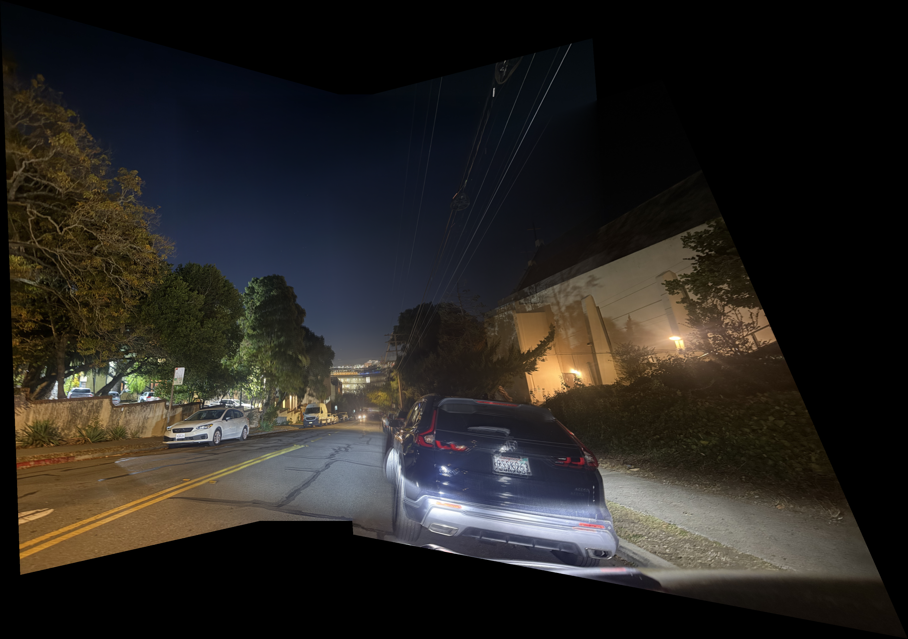
The fourth image adds coverage but makes the SUV’s rear visibly double and introduces a sky seam. Its final Street 01/03 pair has a mean reprojection error of 42.28 pixels and a maximum of 108.35 pixels, substantially worse than the first two pairs. This indicates that the fitted homography does not closely satisfy all selected matches; those correspondences should be reviewed before treating the four-photo result as final. Nearby geometry can shift differently from distant buildings when the camera position changes; subject motion and imperfect correspondences can also contribute. A single homography and feather blending do not remove these disagreements. I use the three-photo result as the main example and keep the four-photo experiment to show the trade-off.
For my third scene, I used two overlapping waterfront photographs from OpenCV’s stitching sample dataset: boat1.jpg and boat2.jpg. These are external input photographs; the bank and nighttime scenes are my own. I use my own homography, inverse-warping, interpolation, and blending functions rather than OpenCV’s stitching implementation.
Source photographs

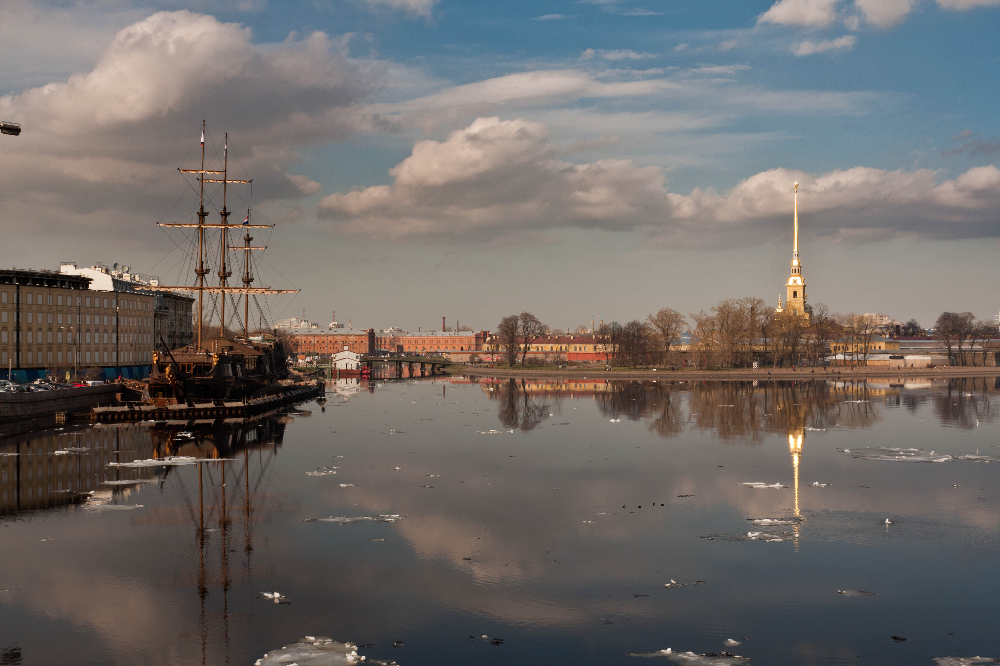

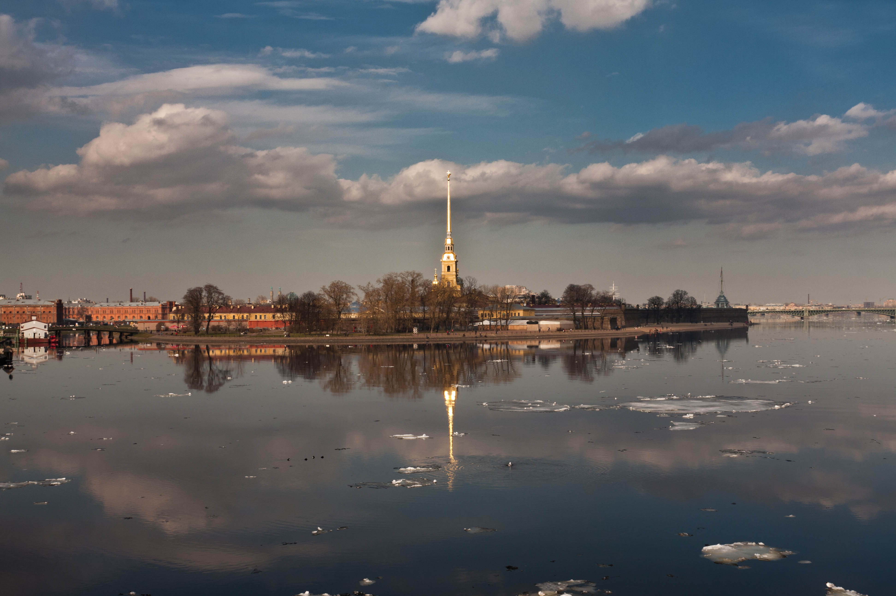
Correspondences and homography

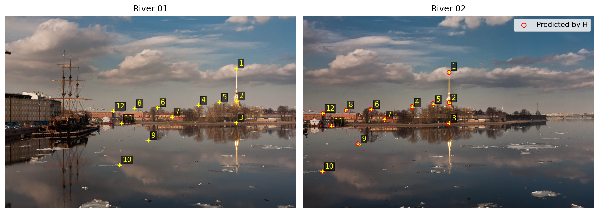
I estimated H from 12 point pairs. Mean reprojection error: 11.49 px · Maximum: 16.28 px, measured in the original destination photograph.
H01→02 = [[ 1.031775 -0.149962 -1043.180812] [ 0.034684 0.885097 61.806039] [ 0.000032 -0.000074 1. ]]
River 02 remains the reference. River 01 is inverse-warped into that coordinate system, and the overlap is combined with feather weights. For the webpage export, sources are reduced to a maximum dimension of 1800 pixels, with coordinate scaling incorporated into H.
Blended result

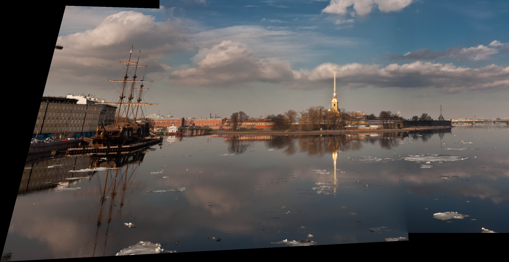
The mosaic combines the ship on the left with the tower and waterfront on the right. Some buildings and trees remain doubled, and differences in the sky are still visible. The initial selection included reflections and water features; reselecting correspondences was part of the alignment process. This result demonstrates the full pipeline, while retaining visible registration limitations. The black border is uncovered canvas.
River workflow code · Saved matches · Matrix and error measurements · Source record
Motivation
I wanted to explore how image warping could help with interior design: could an angled room photograph be straightened to show a wall and its proposed decoration front-on, like rectifying a book cover? The goal is to rectify a selected wall plane and compare it before and after placing artwork. This is a planar preview, rather than a reconstruction of the whole three-dimensional room.
I used a photograph I took in a café and placed a sample photographic print on the wooden wall beneath the shelves. This turns the same geometry used for mosaicing into a simple placement preview: I choose where the print belongs, and the code projects it into that region.
Inputs

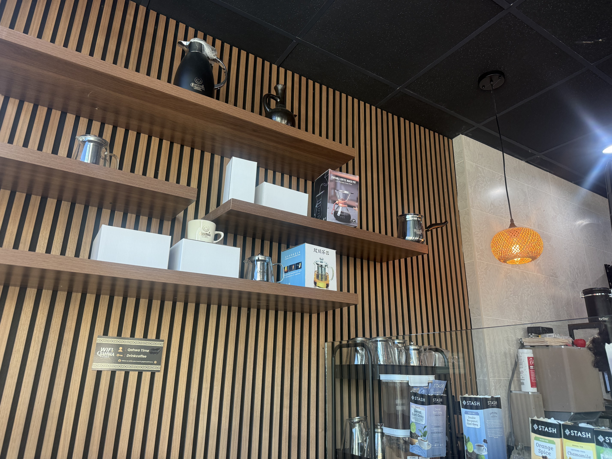
Method
I click four intended poster corners on the café wall in top-left, top-right, bottom-right, bottom-left order. The source coordinates are the four corners of the artwork. I solve for H with my existing least-squares homography function, then use my bilinear inverse warp to sample the artwork directly into the café canvas.
The valid-pixel mask identifies the projected poster area. Pixels inside that mask are replaced with the warped artwork; all other café pixels stay unchanged. This uses opaque compositing rather than panorama feathering, preserving the poster’s distinct boundary. The room and artwork are reduced for a responsive preview, and the saved placement refers to that working resolution.
poster corners → H → selected wall corners
Ipreview = α Iwarped poster + (1 − α) Icafé, with α ∈ {0, 1}

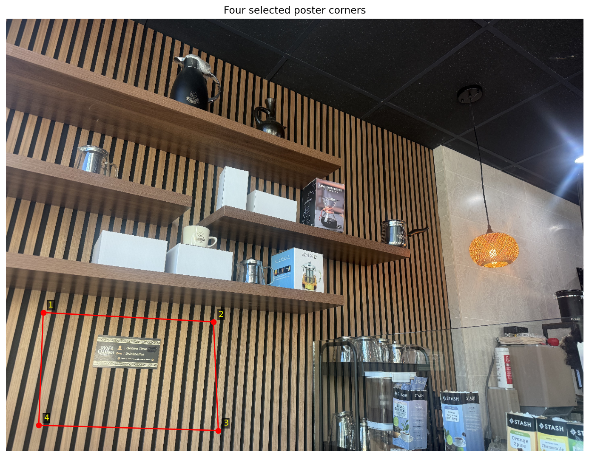
Poster-to-wall homography
[[ 0.568396 -0.029579 91.629032] [ 0.068485 0.435993 727.549677] [ 0.000052 -0.000102 1. ]]
Intermediate step · Poster in the angled photograph
The image below is the placement stage. The next step applies a second homography to the wall area, producing matching front-facing views of the original wall and the proposed design.

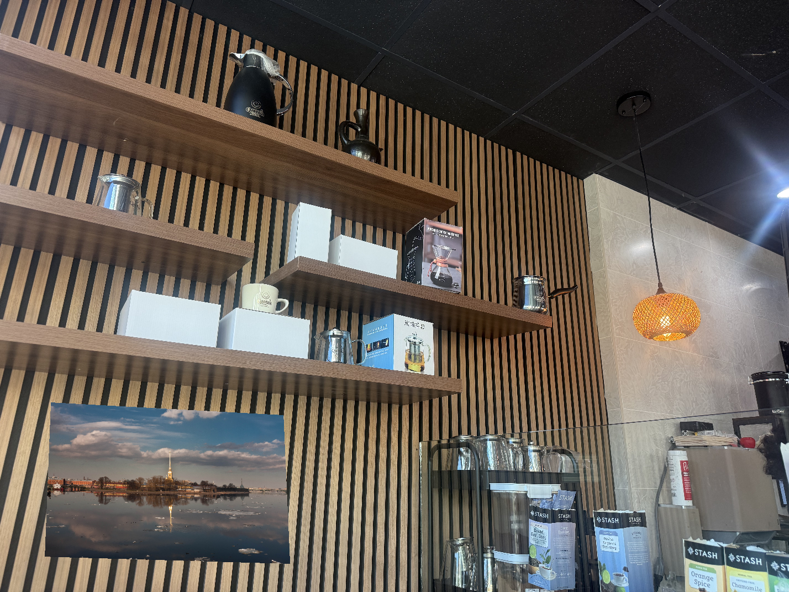
The preview lets me judge how the print’s colors and footprint work with the wood, shelving, and warm lighting. Changing the four destination corners changes its location and apparent size without modifying the original café photograph.
What this preview can and cannot show
The selected quadrilateral gives a manually chosen placement; it does not estimate wall geometry, physical size, or camera calibration. A plausible four-corner outline is not proof that the print has the correct real-world proportions on the wall. There is also no automatic relighting, cast shadow, frame thickness, or foreground occlusion, so the print can look pasted on.
A future version could compare several artworks at one saved position and add measured wall dimensions or calibrated geometry to control physical scale. A flower pot or sofa would require a suitable cutout for one fixed view, multiple views, or a 3D model to represent changes in viewpoint correctly.
Front-facing wall rectification code · Poster-placement code · Saved placement and homography
Straightening the shelf area
I next applied a second homography to a selected quadrilateral around the shelves, mapping it to a front-facing rectangle with an assumed width-to-height ratio of 1.5. This is an approximate planar reorientation: the shelf fronts, objects, and wall occupy different depths, so they cannot all be corrected by one homography. The chosen region excludes the lower-wall poster, so the original and poster-design rectifications are identical in this experiment.

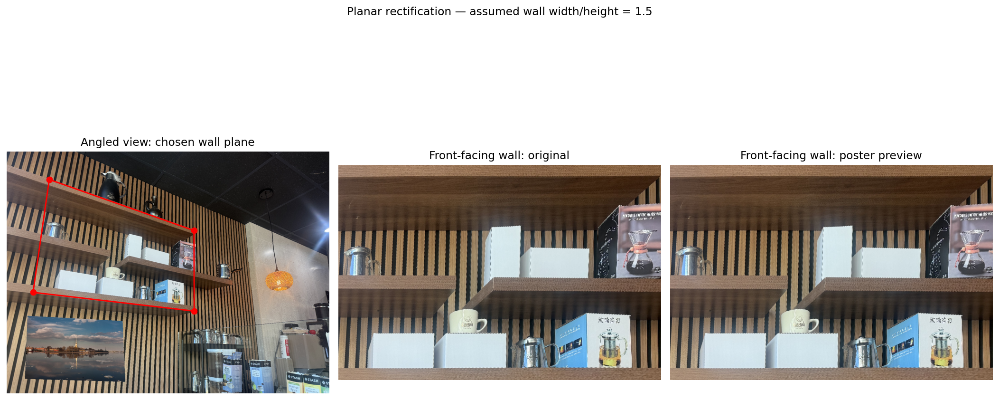
Notebook on the shelf · Exploratory result
I then reused my rectified yellow notebook cover as a design asset. The idea was to preview the notebook on a shelf and inspect it from the straightened view. I rotated the cover, selected four placement corners in the café photo, and estimated Hplace. For the front-facing preview I composed Hfront = HwallHplace, sampling the cover directly into the rectified shelf view.

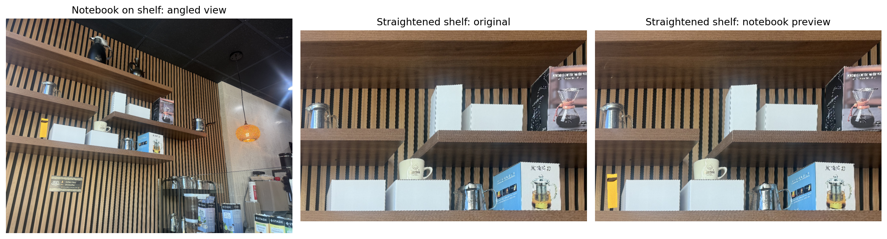
This attempt was not visually convincing. The chosen quadrilateral compresses the cover into a narrow yellow strip rather than preserving the notebook’s intended landscape proportions. There is no reconstructed thickness, page block, or stack, and no lighting match, contact shadow, or depth-aware occlusion. Applying the wall homography also treats the inserted cover as if it shared that reference plane, rather than recovering its true position on a three-dimensional shelf.
The experiment shows that transforming and compositing pixels is insufficient for a believable interior-design preview. A better version would constrain the cover’s aspect ratio in an appropriate shelf plane, estimate scale, and represent additional visible surfaces or use a cutout photographed from a suitable viewpoint. I retain this result to document the geometric limitations and the distinction between planar warping and 3D scene editing.
Angled notebook preview · Rectified notebook preview · Notebook placement code · Saved notebook placement · Saved shelf rectification


To start automatic image alignment, I detect interest points in Bank 01 and Bank 03 using the provided Harris sample code. I convert each image to grayscale and use a single scale (σ = 1), integer-pixel local maxima, and a 20-pixel border exclusion. The sample uses scikit-image’s Harris response with method="eps". These are all returned local maxima before ANMS; no random sampling or strongest-point truncation is applied.
Adaptive Non-Maximal Suppression
Keeping only the strongest responses can cluster features in highly textured areas. ANMS favors strong corners that are far from a sufficiently stronger corner. For each candidate i, I compute:
r_i = min ||p_i − p_j||₂ over j satisfying f_i < 0.9 f_j
Here p is the pixel position and f is the Harris response. A corner with no qualifying stronger neighbor receives infinite radius. I retain the 500 candidates with the largest radii, breaking ties by response strength and then input order. This encourages spatial coverage without requiring perfectly uniform spacing. Distances are evaluated one candidate at a time to avoid storing a full pairwise distance matrix.
Bank 01: before and after ANMS

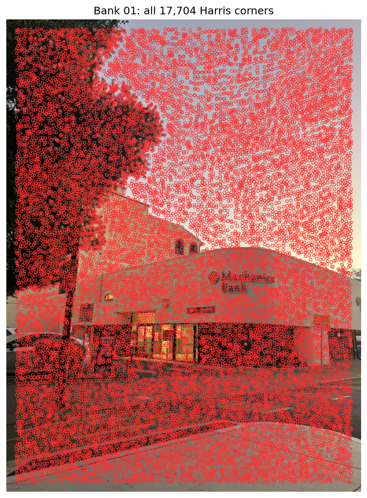

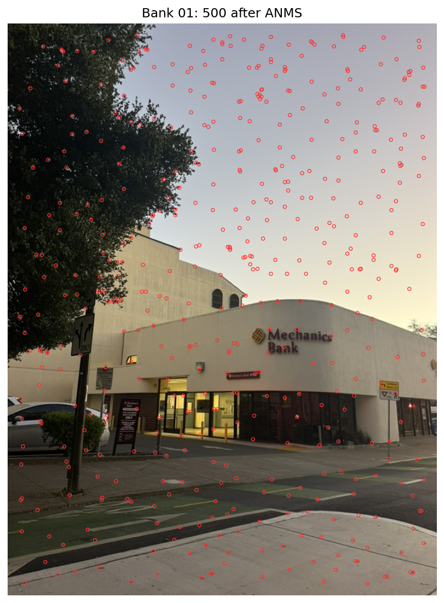
Bank 03: before and after ANMS

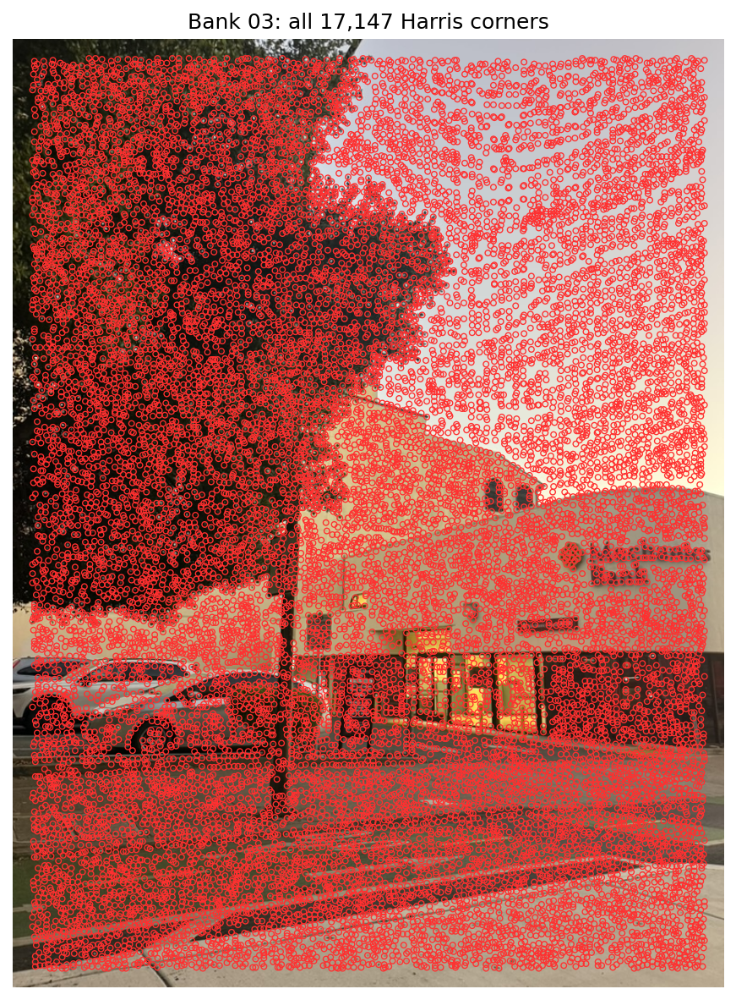

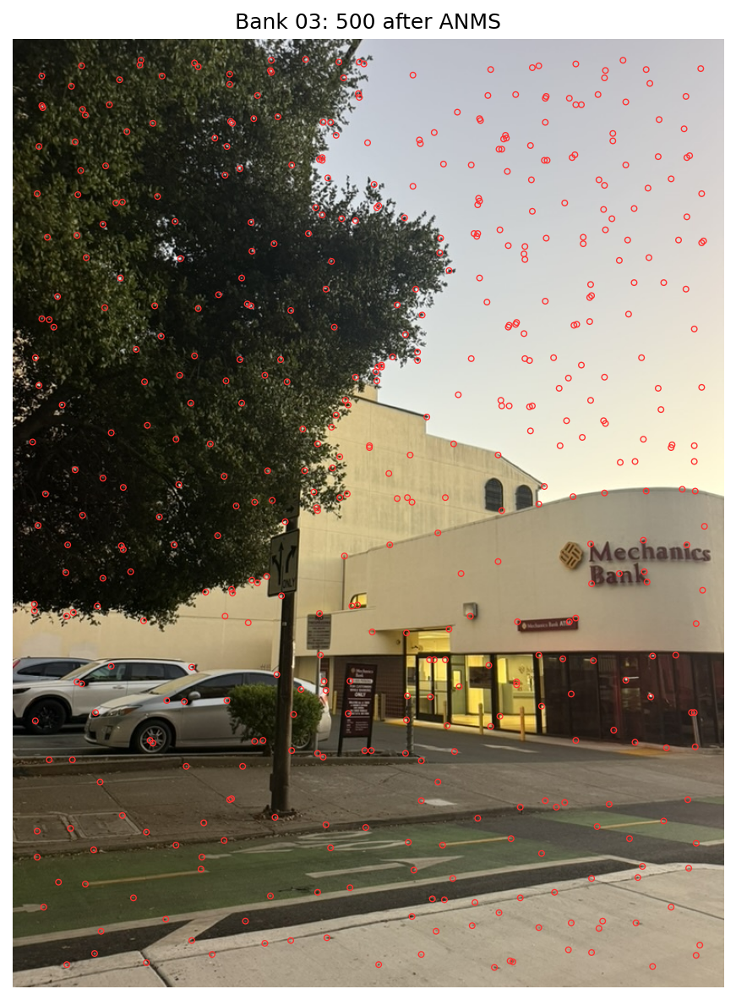
The selected points cover more of the image, but some lie in the sky or smooth surfaces. Small image variations can produce local Harris maxima, and isolated weak points can have large ANMS radii. Spatial coverage alone does not guarantee that a feature will match reliably; descriptor matching and robust estimation will need to reject unreliable correspondences.
Harris and ANMS pipeline · Provided Harris helper · Counts and parameters
Run python3 code/corners.py from the project directory to regenerate the figures. Saved Bank 01 and Bank 03 arrays contain coordinates in (x, y) order, responses, suppression radii, and selected indices for later descriptor extraction.
Each ANMS corner receives a descriptor from an axis-aligned 40×40 grayscale window. I Gaussian-blur the grayscale image with σ = 2 before sampling an 8×8 grid at five-pixel spacing. The sample offsets are −17.5, −12.5, …, +17.5 pixels relative to the corner; bilinear interpolation evaluates these positions. This captures a larger neighborhood than a direct 8×8 crop while reducing sensitivity to small localization errors.
I subtract the sampled patch mean and divide by its population standard deviation, then flatten the result into a 64-dimensional vector:
descriptor = (patch − mean(patch)) / std(patch)
Every retained descriptor has mean zero and standard deviation one. This removes additive intensity bias and positive multiplicative gain. Windows crossing the image boundary and patches with standard deviation below 10⁻⁶ are discarded. All 500 selected points per image passed these checks. The descriptors remain axis-aligned; rotation normalization and the wavelet transform are omitted.
The figures show eight strongest valid features per image. Each column contains the local context with its 40×40 support outlined, the original 40×40 patch, and the normalized 8×8 descriptor. All descriptors, including those outside these examples, are used for matching. The display uses the same [−2, 2] grayscale range for every normalized patch; saved descriptors are not clipped.
Bank 01: extracted features

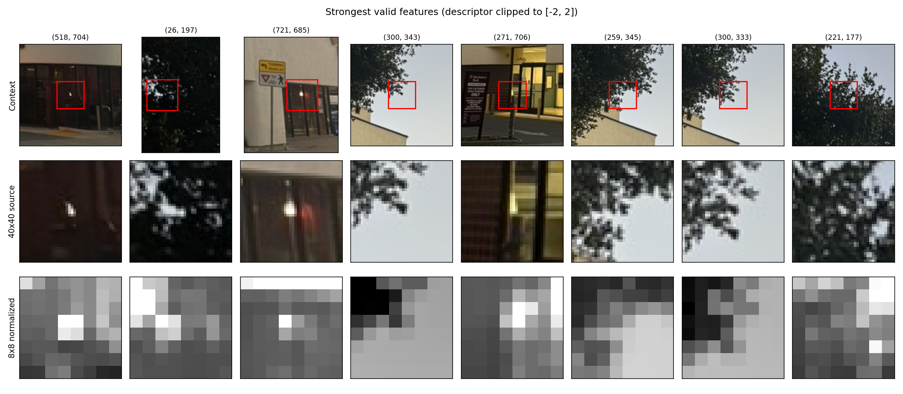
Bank 03: extracted features

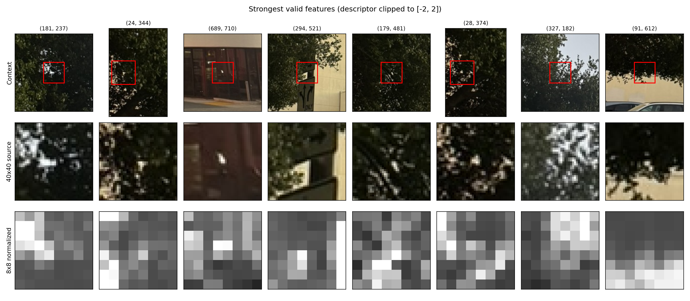
Bank 04: extracted features

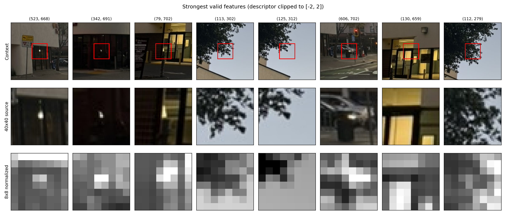
For each descriptor in the first image, I exhaustively compute Euclidean distances to all descriptors in the second image. I find the nearest and second-nearest descriptors and accept the first only when:
d₁ / d₂ < 0.8 Equivalent squared-distance test: SSD₁ / SSD₂ < 0.64
Figure 6b of Brown, Szeliski, and Winder (2005) motivates rejecting ratios near one, where the best candidate is ambiguous. I choose 0.8 in Euclidean distance (0.64 on the figure’s squared-error axis) as a practical cutoff. It is a chosen parameter, not an accuracy guarantee or a threshold tuned against ground truth. Zero-distance ties and queries with fewer than two candidate neighbors are rejected.
The following figures show all accepted matches for two image pairs. Matching is directional, so multiple query features may select the same target. These are descriptor-only matches: no mutual-neighbor filter or RANSAC has been applied.
Bank 01 → Bank 03

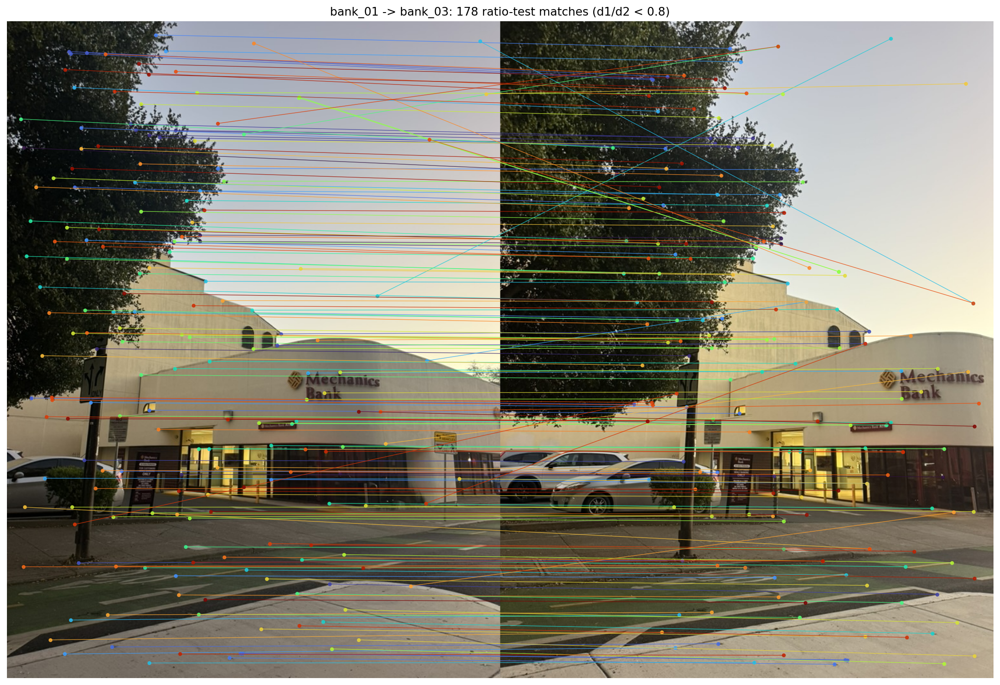
Bank 03 → Bank 04

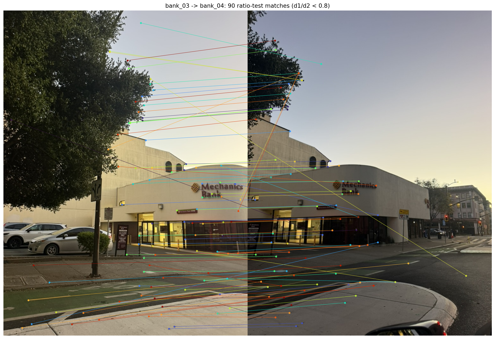
Threshold sensitivity
Increasing the ratio threshold admits more matches, including more ambiguous candidates. Counts alone do not measure correctness.
| Euclidean ratio cutoff | Bank 01 → 03 | Bank 03 → 04 |
|---|---|---|
| 0.6 | 135 | 37 |
| 0.7 | 156 | 61 |
| 0.8 | 178 | 90 |
| 0.9 | 254 | 152 |
Some lines disagree with the main geometric alignment, especially for repeated structures and low-texture regions. Axis-aligned patches also have limited tolerance to perspective, scale, and rotation changes. A later geometric verification step can reject these remaining outliers before estimating the final mosaic.
Download descriptor extraction and matching code · Parameters and match counts. Run python3 code/features.py to regenerate all B.2/B.3 figures and saved arrays.
I implement four-point RANSAC from scratch. Each trial samples four distinct correspondences without replacement, rejects samples with repeated or nearly collinear geometry, and estimates a homography with normalized DLT. Coordinates are centered and scaled to mean distance √2 before solving the homogeneous linear system by SVD, then the homography is converted back to working-image pixel coordinates.
For every candidate match, I project the source point through H and measure Euclidean error in the destination image. Errors below 3 working-image pixels are inliers. I keep the largest consensus, using median inlier error to break ties. The trial budget starts at 10,000 and adapts to the observed inlier fraction w, using confidence 0.999 and four-point samples:
N = ceil(log(1 − 0.999) / log(1 − w⁴))
The best consensus is refitted using all its inliers; I alternate fitting and reclassification for up to ten refinement steps. A fixed random seed of 180 makes the run reproducible. No library RANSAC or homography estimator is used.
For these three distinct scenes, I use the multiscale descriptors described in B.5 and the B.3 ratio cutoff of 0.8. If several source descriptors select the same target descriptor, only the match with the lowest ratio is retained before RANSAC. All automatic transforms use feature matches alone. Saved Part A correspondences are used solely for the manual comparison.
Images are resized with anti-aliasing to a maximum side of 1,024 pixels before processing; the saved manual points are mapped to this working resolution with the same pixel-center convention. Each comparison uses the same two input photographs, destination reference frame, inverse bilinear warping, and feather blending from Part A. I regenerate the manual baseline from its saved clicks so the input-image count matches the automatic result. The standalone automatic mosaics are linked below each comparison. Black regions are uncovered canvas.
Bank · Bank 01 + Bank 03

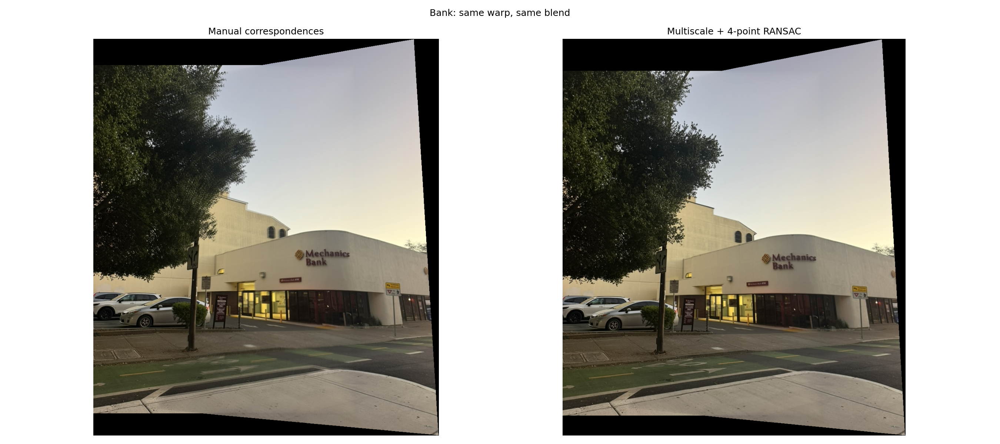


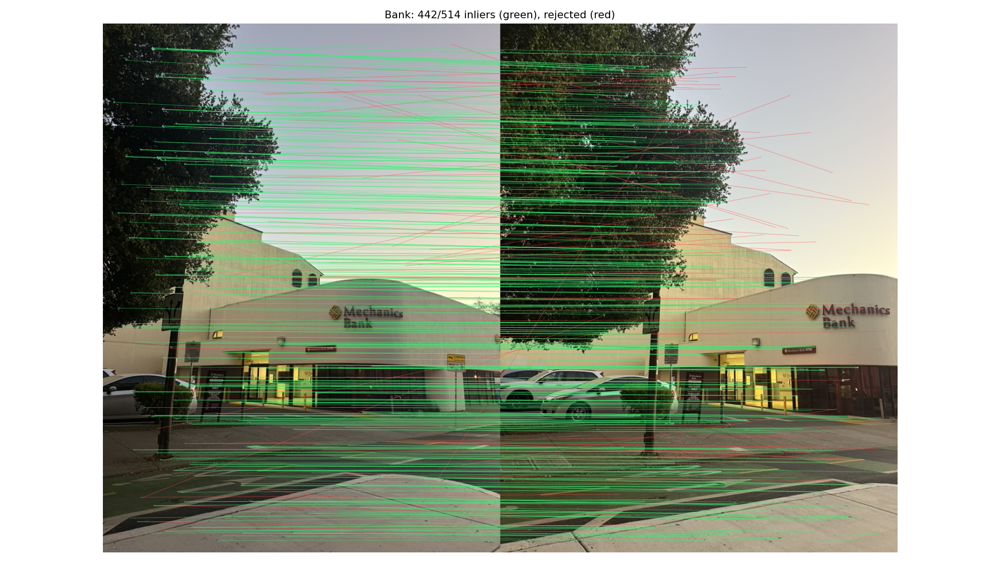
Street · Street 04 + Street 02

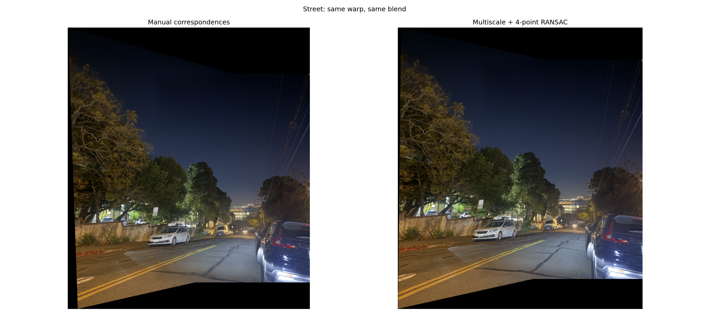


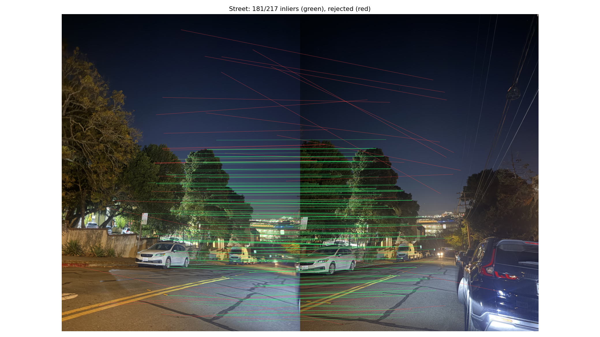
River · River 01 + River 02

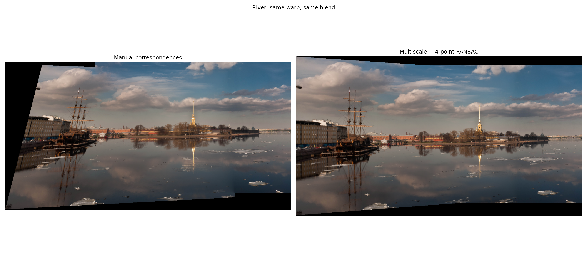


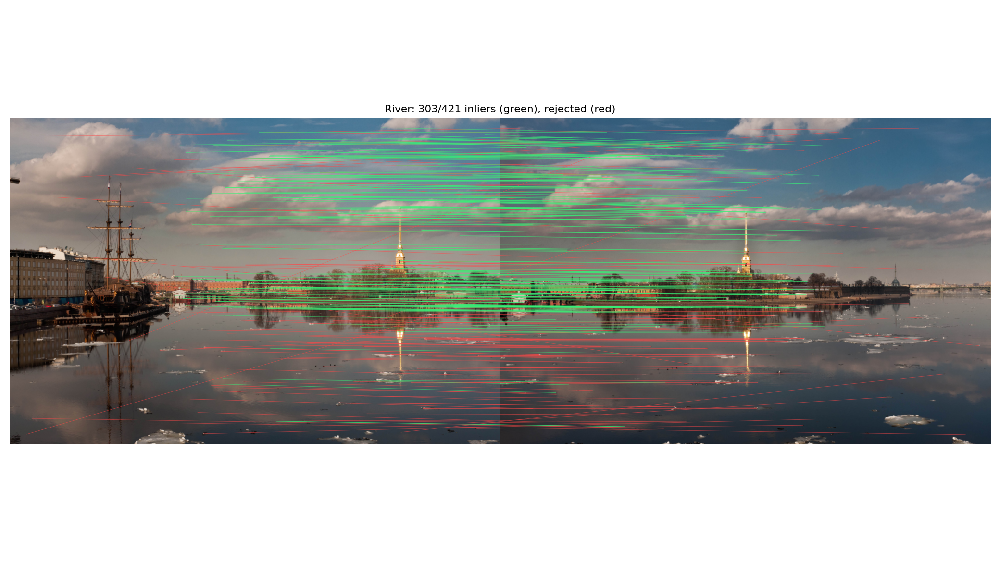
These residuals measure agreement on the fitted feature correspondences; they are not independent accuracy measurements. Planar homographies cannot remove parallax from nearby objects or motion between exposures, and feather blending cannot correct all exposure differences or ghosting. Compare roof lines, signs, and other stationary edges in the standalone results.
The implementation was checked on synthetic correspondences with known projective geometry, Gaussian noise, and 60 outliers among 160 matches. It recovered all 100 intended inliers in that test. Additional checks cover exact four-point recovery, degenerate samples, insufficient matches, and reproducibility.
I build an anti-aliased grayscale pyramid at scales 1, 1/√2, and 1/2. Harris detection (σ = 1) and ANMS run independently at each level, retaining up to 500 corners per level. Each level gets the same blurred 40×40-to-8×8 descriptor extraction and bias/gain normalization from B.2. Thus a descriptor covers approximately 40, 56.6, or 80 working-image pixels. Descriptors from all levels are pooled for matching, allowing a feature in one image to match a feature at another scale.
Detected coordinates are mapped back with the resize operation’s pixel-center convention before RANSAC. Geometric thresholds therefore remain in working-image pixels. This adds discrete scale tolerance; the descriptors remain axis-aligned and do not normalize rotation. No wavelet transform is used.

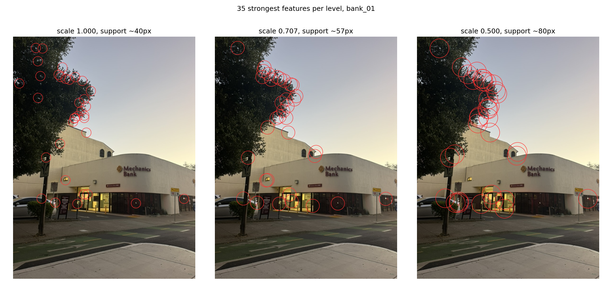
Single-scale versus multiscale
The single-scale run uses only the finest working-resolution level with identical matching and RANSAC parameters. The multiscale run has up to 1,500 features per image versus 500, so the counts reflect both additional features and additional scales; this is not a comparison at an equal feature budget. Cross-scale inliers have different pyramid-level indices in the two images.
| Scene | Single-scale matches / inliers | Multiscale matches / inliers | Cross-scale inliers | Multiscale median error (px) |
|---|---|---|---|---|
| Bank | 167 / 145 | 514 / 442 | 1 | 1.13 |
| Street | 70 / 63 | 217 / 181 | 2 | 1.07 |
| River | 140 / 103 | 421 / 303 | 2 | 0.85 |
More inliers do not alone establish a better mosaic. These photographs were captured at similar scales, so same-level correspondences can dominate even with multiscale processing. The main benefit here is access to features with different spatial support sizes; a broader scale-change benchmark would be needed to measure scale robustness.
Download RANSAC, multiscale extraction, and mosaic pipeline · Complete parameters, counts, transforms, and residual summaries. Run python3 code/robust_mosaics.py to regenerate B.4/B.5. Uses NumPy, SciPy, scikit-image, and Matplotlib, plus the existing Part A and B.1/B.2 helper modules.
Download current Python code · Homography matrices and errors
The implementation uses NumPy and Matplotlib. Homography estimation, inverse warping, nearest-neighbor sampling, bilinear sampling, and feather blending are implemented explicitly.